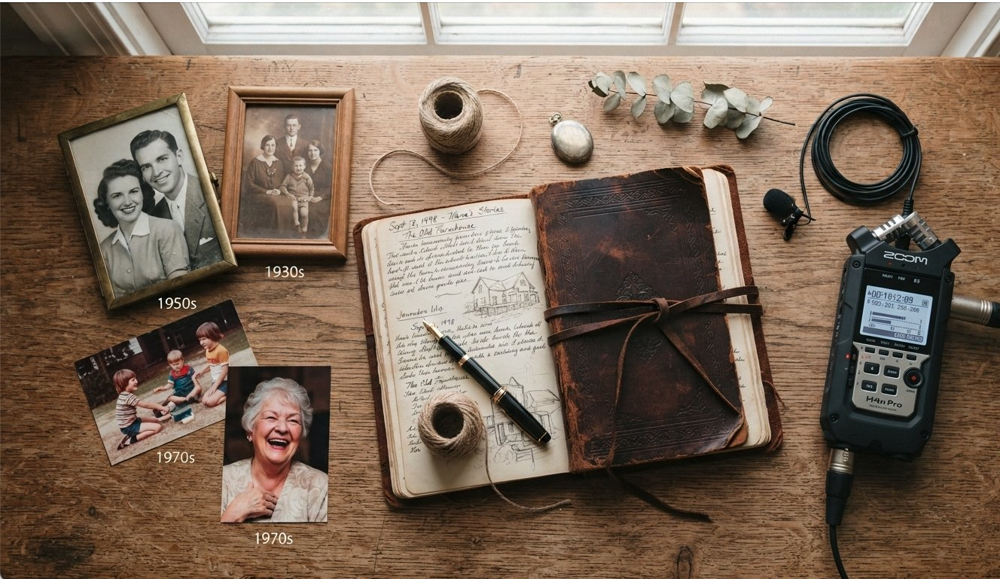
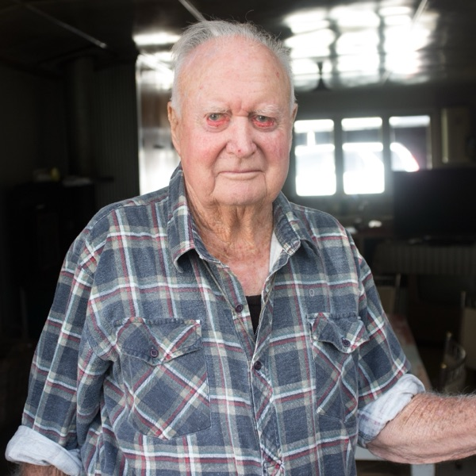
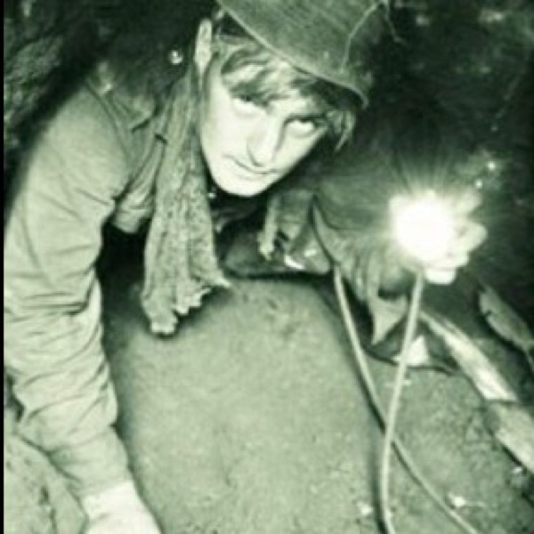
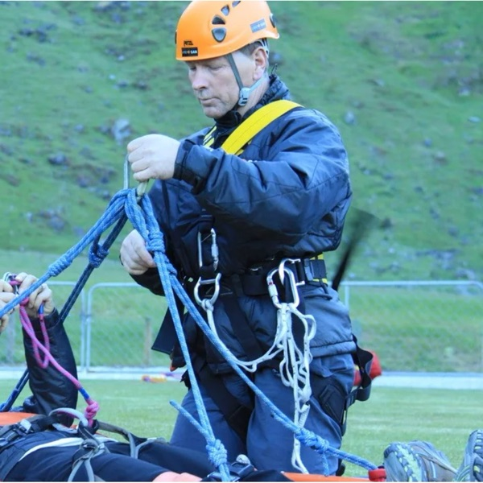
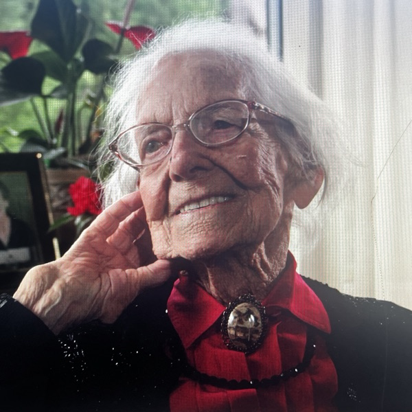
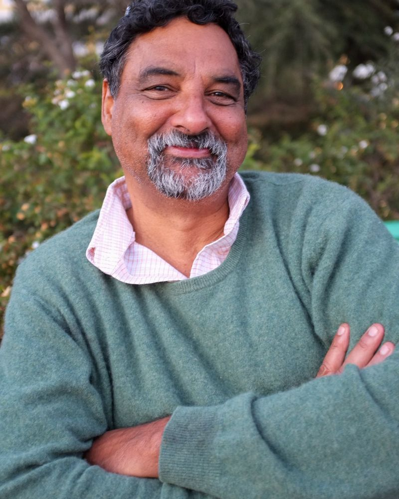

Preserving your story, safeguarding your legacy
Relaxed, recorded conversations that capture a lifetime of memories and family stories, told in the voice of the person who lived them.
Book a free chat Listen to a sample
Every time an elder passes away, a library burns to the ground.
Your family's stories are one of the most precious things you can pass on. But unless someone records them, they fade a little more each year.
I sit down with the people you love, help them tell their stories in their own words, and turn those conversations into professionally edited recordings your family can keep forever.
I work mostly with families, and also with clubs, businesses and community groups who want to capture their history while the people who lived it are still here to tell it.
How it works
No technical knowledge needed, and no pressure. I look after the equipment and the questions. The storyteller just talks.
-
A free chat
We talk for about 30 minutes, by phone or Zoom, about who's telling the story, what you'd love to capture, and the people, places and years to cover. No cost and no obligation.
-
The interview
A relaxed, guided conversation, usually at home where the storyteller feels most comfortable.
-
Editing
I carefully edit the recordings and clean up background noise so every word comes through clearly.
-
Your recordings
You receive the finished recordings as digital files, ready to share with family near and far.
Listen
A few short excerpts from conversations I've recorded, shared with the storytellers' permission.
-

Deer culling days
An early deer culler doing it tough.
-

Down the tunnels
The horror of the tunnels in Vietnam.
-

Childhood
Growing up in the Takitimu Mountains.
-

Early years
Growing up in rural New Zealand.

Hi, I'm Paul
For nearly 40 years I've made documentaries for television networks including Al Jazeera English, ABC TV, SBS, Channel 4 and ZDF, filming in more than 40 countries. More recently I've turned to radio, making Deer Wars, a nine-part RNZ series that won a bronze medal at the 2023 New York Festivals Radio Awards, and Search and Rescue NZ, also for RNZ.
I've found that the best stories come out over a cup of tea, not in an interview room. My job is to make the conversation feel easy, ask the questions families often wish they'd thought of, and quietly take care of the technical side.
I'm a member of NOHANZ, the National Oral History Association of New Zealand, and follow its code of ethics.
Your recordings belong to you. Nothing is ever shared without your written permission.
Pricing
One simple price, with no surprises.
Life story recording
$750
NZD, no GST
- A free 30-minute planning chat
- Interview questions tailored to the storyteller
- Up to 3 hours of recorded conversation, over one or more sessions
- Recording in your home around Wānaka
- Professional editing and background-noise cleanup
- Digital audio files to download and share with the whole family
- A written transcript
Optional extras
- USB keepsake copy
- $15
- Travel beyond Wānaka
- Quoted on request
Thinking of this as a gift for a parent or grandparent? It's easy to split between the family.
Have a story worth recording?
Get in touch for a free, no-pressure chat.